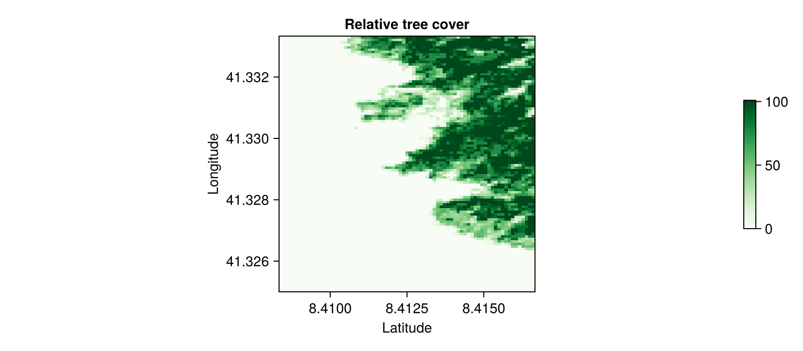

... split a layer in tiles?
This document illustrates the use of the tiles function, to rapidly split a layer into multiple layers. This is useful if you want to perform operations on raster that can easily be made parallel, and do not require the full raster.
using SpeciesDistributionToolkit
using CairoMakieTo illustrate the tiling, we will grab the tree cover as given in the EarthEnv dataset, for a small spatial extent.
dataprovider = RasterData(EarthEnv, LandCover)
spatial_extent = (left = 8.412, bottom = 41.325, right = 9.662, top = 43.060)
trees = sum([
SDMLayer(dataprovider; layer = i, full = true, spatial_extent...) for
i in 1:4
])SDM Layer with 31559 UInt8 cells
Proj string: +proj=longlat +datum=WGS84 +no_defs
Grid size: (209, 151)Splitting the data into tiles can be done by calling the tiles function.
This will return a matrix with the same type as the layer given as its first argument. The second argument (the size of the matrix) can be omitted, and will default to (5, 5).
tree = tiles(trees, (2, 2))2×2 Matrix{SDMLayer{UInt8}}:
SDMLayer{UInt8}(UInt8[0x00 0x00 … 0x00 0x00; 0x00 0x00 … 0x00 0x00; … ; 0x00 0x00 … 0x3f 0x37; 0x00 0x00 … 0x18 0x28], Bool[1 1 … 1 1; 1 1 … 1 1; … ; 1 1 … 1 1; 1 1 … 1 1], (8.40833, 8.41667), (41.325, 41.3333), "+proj=longlat +datum=WGS84 +no_defs") … SDMLayer{UInt8}(UInt8[0x00 0x00 … 0x00 0x00; 0x00 0x00 … 0x00 0x00; … ; 0x1c 0x0c … 0x00 0x00; 0x23 0x10 … 0x00 0x00], Bool[1 1 … 1 1; 1 1 … 1 1; … ; 1 1 … 1 1; 1 1 … 1 1], (9.03333, 9.04167), (41.325, 41.3333), "+proj=longlat +datum=WGS84 +no_defs")
SDMLayer{UInt8}(UInt8[0x00 0x00 … 0x02 0x06; 0x00 0x00 … 0x11 0x1e; … ; 0x00 0x00 … 0x00 0x00; 0x00 0x00 … 0x00 0x00], Bool[1 1 … 1 1; 1 1 … 1 1; … ; 1 1 … 1 1; 1 1 … 1 1], (8.40833, 8.41667), (42.1917, 42.2), "+proj=longlat +datum=WGS84 +no_defs") SDMLayer{UInt8}(UInt8[0x04 0x00 … 0x00 0x00; 0x04 0x00 … 0x00 0x00; … ; 0x00 0x00 … 0x00 0x00; 0x00 0x00 … 0x00 0x00], Bool[1 1 … 1 1; 1 1 … 1 1; … ; 1 1 … 1 1; 1 1 … 1 1], (9.03333, 9.04167), (42.1917, 42.2), "+proj=longlat +datum=WGS84 +no_defs")This can now be plotted:
tile_plot = heatmap(
rand(tree);
colormap = :Greens,
figure = (; size = (800, 350)),
axis = (;
aspect = DataAspect(),
xlabel = "Latitude",
ylabel = "Longitude",
title = "Relative tree cover",
),
)
Colorbar(tile_plot.figure[:, end + 1], tile_plot.plot; height = Relative(0.5))
This construct is very useful when your problem lends itself to naive parallelism.